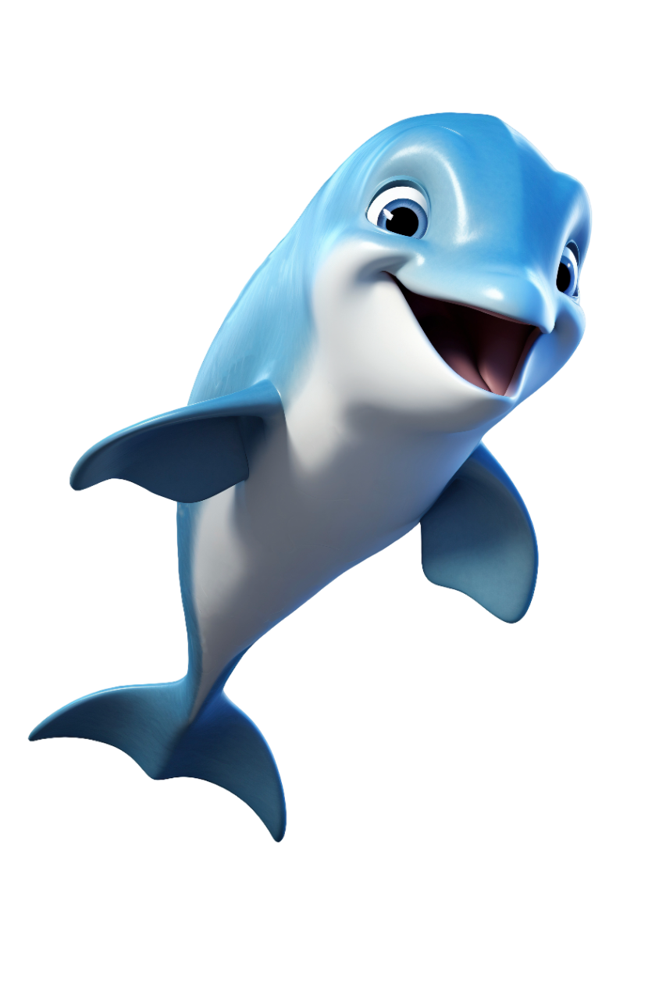

Los Delfines: Son capaces de comunicarse entre sí, utilizando sonidos de diferentes características. Tienen una audición altamente desarrollada, de tal manera que el sonido que nosotros escuchamos, en realidad se compone de unos 700 sonidos diferentes, lo que quiere decir que estaría transmitiendo cientos de mensajes. También les encanta jugar y realizar acrobacias y giros en el aire para reflejar su alegría, normalmente después de comer, Los delfines son mamíferos pertenecientes a la familia Delphinidae y se trata probablemente de las criaturas marinas del reino animal más populares, carismáticas e inteligentes. Estas características y muchas otras peculiaridades hacen que los humanos nos interesemos enormemente por estos cetáceos y su inteligencia.